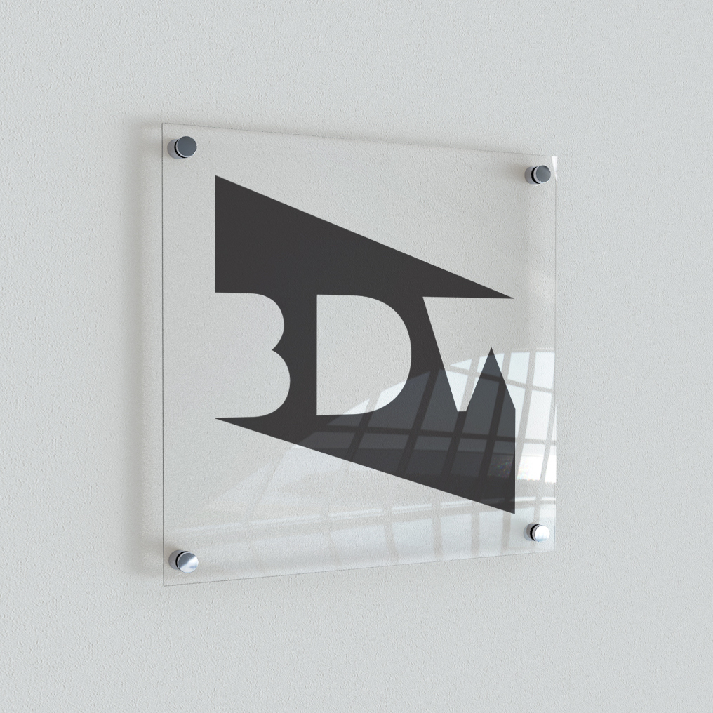

Boston Design Week consists on an annual 12-day citywide design festival that seeks to increase public awareness and appreciation of all aspects of design, give recognition of the vital role design plays in our lives, and bring new audiences to many design industries and organizations.
Their vision is to encourage the public to explore all paths of art & design such as architecture, environmental, landscape, urban, interior, product, industrial, fashion, graphic, photography and even studio design such as furniture, decorative arts, sculpture, textiles and jewelry.

In this project I chose to redesign Boston Design Week's branding concept. In order to focus on the subject and create a new concept, I brainstormed words that gave me the best feeling of the organization; engaging, emerging, connections, networking, problem solving, exposure and process.
After doing a lot of research, I concluded that even though Boston is small city, it is emerging and evolving every day. It emanates energy in such a little space. It can be seen that it is well characterized by the color red; which can be seen in its architecture made out of red bricks, and in logotypes of many important companies such as the Red Sox, Citgo, Museum of Fine Arts, Museum of Science and even Harvard University.
Then, after all the process I went through to develop my logo I finally came out with a concept that best describes the essence of Boston Design Week. The shape created on the background connects the three innitials in the same way people get connected within each other during this festival. Its sharpness represents the energy that flows in two directions; the people and the audience. The red-orange color is related to my keywords; exposure, engaging and connections. It also represents the energy of the target audience which are adults and young emerging students.